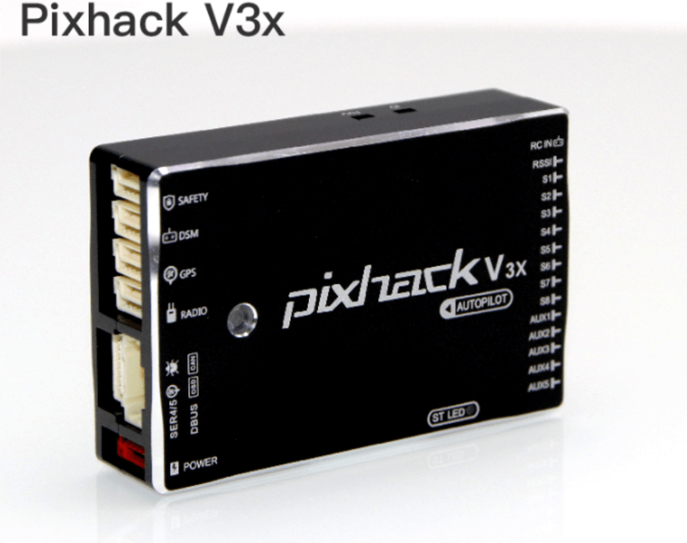

Introduce

Cover all models
Pixhack v3 is an advanced autopilot designed and made in CUAV® .
The board is is based on the FMUv3 open hardware design. It is fully compatible with PX4 and ArduPilot. intended primarily for academic and commercial develop.
Applicable model: plane\copter\helicopters\VTOL\unmanned vehicles unmanned boats.
Powerful processor
Based on STM32F427 (180MHZ) master and STM32F100 coprocessor.
Redundant design
Built-in 3 IMU Redundant Designs (includes 3 accelerometers, 3 sets of gyroscopes, 1 sets of electronic compass, 2 sets of digital barometers)
Supports 3 sets of power supply redundant switching
The built-in sensor data fusion mechanism and failover mechanism in the software greatly reduce the chance of crashes caused by flight control.
Enrich extension
Scalable 1 set of electronic compass, 1 smart battery, 2 sets of NMEA or UBX standard GPS, CAN bus device (ESC), 2 I2C devices (smart battery, status light, optical flow smart camera, laser sensor, ultrasonic sensor, etc.
Built-in shock absorber system
Separate design of sensor and main board, built-in high-performance shock absorption system, a variety of severe model environment, better adaptability
Built-in IMU temperature automatic compensation system
Pixhack V3 recently is designed a digital temperature control system to keep the sensor in a constant temperature environment in order to adapt to a more severe low temperature environment.
Technical specifications
| Hardware parameters | |
|---|---|
| Main Processor | STM32F427 |
| Failsafe co-processor | STM32F100 |
| Sensor | |
| ccelerometer 3 | LS303D\MPU6000\MPU9250 |
| Gyro 3 | L3GD20\MPU6000\MPU9250 |
| Compass 1 | LS303D |
| Barometer 2 | MS5611 X2 |
| Interface | |
| Mavlink UART | 2 (with hardware flow control) |
| GPS UART | 2 |
| DEBUG UART | 1 |
| RC bsignal input protocol | PPM/SBUS/DSM/DSM2 |
| RSSI input | PWM or 3.3 analog voltage |
| I2C | 2 |
| CAN stander bus | 1 |
| ADC input | 3.3V X1 , 6.6V X1 |
| PWM output | Standard 8 PWM IO + 5 Programmable IOs |
| Support models | |
| Plane / copter / helicopter / VTOL / rover etc. | |
| Working environment and physical parameters | |
| PM working voltage | 4.5 ~ 5.5 V |
| USB voltage | 5.0 V +- 0.25v |
| Servo voltage | 4.8~5.4V |
| working temperature | -20 ~ 60°c |
| Size | |
| Length x width x height | 68*44*17 |
| Wegiht | 63g |
Interface cognition

1.Main status led
2.boot led
3.Safe unlock switch
4.DSM remote control signal + ADC6.6 interface
5.GPS+COMPASS interface
6.Digital interface
7.Bus expansion interface
8.DEBUG interface + GPS2 interface
9.POWER IV sensor interface
10.Micro USB interface
11.TF card interface
12.FMU STM32F4 restart button
13.IO STMF100 restart button
Interface definition